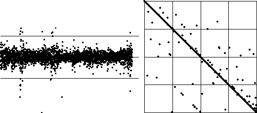
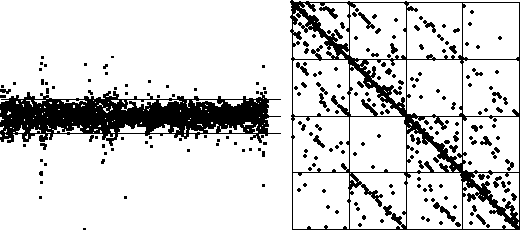

| When we are dealing with differences of data, there is at least one additional natural scheme for setting the bin boundaries: |
| take |
| Here we place B1 and B3 one-half of the maximum
distance of any difference from |
|  |
| This does not produce many points in bin 1 and bin 4, so
next we place B1 and B3 one-fifth
of the maximum distance from |
| This picture appears to have enough structure to be useful. |
|  |
Return to Sample